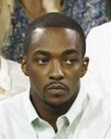

소코비아 사태 이후 뉴 어벤져스를 이끌게 된 캡틴 아메리카, 또 다른 사건을 수습하러 뉴 어벤져스 팀이 왔지만 민간인들이 큰 피해를 받게 되고 히어로들이 함부로 날뛰면 안 된다는 여론이 형성되어 어벤져스는 UN의 산하 기구로 들어가야 한다는 법안이 제출된다. 이 법안에 반대하는 캡틴 아메리카와 찬성하는 아이언맨과의 대립, 이를 중재하는 새로운 히어로, 그리고 새로운 빌런들의 이야기가 시작된다.
 |
 |
 |
 |
 |
|---|---|---|---|---|
| 조 루소 (감독) |
안소니 루소 (감독) |
크리스 에반스 (스티브 로저스) |
로버트 다우니 주니어 (토니 스타크) |
스칼렛 요한슨 (나타샤 로마노프) |
|  |  |
 |
||
|---|---|---|---|---|
| 세바스찬 스탠 (버키 반즈) |
안소니 마키 (샘 윌슨) |
돈 치들 (제임스 로드) |
제레미 레너 (클린트 바튼) |
엘리자베스 올슨 (완다 막시모프) |
 |
 |
 |
 |
|
|---|---|---|---|---|
| 채드윅 보스만 (티 찰라) |
톰 홀랜트 (피터 파커) |
폴 러드 (스캇 랭) |
폴 베타니 (비전) |
다니엘 브륄 (제모 남작) |
버키 반즈 : 등받이 좀 올리지?
스캇 랭 : 니 양심, 우리 얘기한지 참 오래 됐지?
토니 스타크 : 나도 친구였잖아?
스티브 로저스 : 하루 종일도 할 수 있어
마블 최고라 평가받는 윈터 솔져 못지않은 호평을 받으며 팬덤, 평론가, 일반인 관객 모두에게 전체적으로 영화의 완성도가 매우 높다는 좋은 평을 받고 있다. MCU 영화 중에서 다섯 손가락 안에 꼽힐 정도로 상당히 평가가 높은데, 실제로 로튼토마토, 메타크리틱에 등록된 MCU 영화 중 가장 점수가 높은 영화 다섯 편이 《어벤져스》, 《아이언맨》, 《가디언즈 오브 갤럭시》, 《캡틴 아메리카: 윈터 솔져》, 《캡틴 아메리카: 시빌 워》이다. 히어로 팬덤 내에서는 《윈터 솔져》가 더 좋았다는 사람도 많지만 일반인이나 로튼 토마토, 메타크리틱 같은 해외 유명 평론 사이트에선 《시빌 워》에 좀 더 높은 점수를 주었다. 시리즈가 진행될수록 평이 떨어지는 징크스를 떨쳐낸 셈이다.
상당히 씁쓸하고 암울하게 끝난 시빌 워 이벤트를 바탕으로 만든 영화라서 그런지 《캡틴 아메리카: 시빌 워》 역시 어벤져스가 결국 분열된다는 배드 엔딩으로 끝난다. 기존의 히어로물 같이 밝고, 가볍게 즐길 수 있는 영화를 기대하고 온 관객들에겐 이런 비극적인 엔딩이 별로일 수 있지만 히어로 팬덤 측에선 히어로 영화의 클리셰를 깨어버렸다며 높게 평가하는 의견이 많다.
특히 제모의 진상이나 토니 스타크의 부모님의 죽음에 대한 장면에선 심리 스릴러가 히어로 장르에 접목되었다고 극찬하는 반응도 있었다. 10명이 넘는 히어로들이 등장함에도 크게 묻히는 캐릭터가 없었다는 점에서도 호평을 받는다. 주인공 캡틴과 아이언맨은 물론, 공항 전투 씬에서만 등장한 앤트맨까지도 적당한 개그 시퀀스로 신스틸러라며 호평을 들었다. 딱 3명의 히어로만 나왔음에도 평가가 골로 가고 분량 배분에서도 좋은 소리를 못 들은 《배트맨 대 슈퍼맨: 저스티스의 시작》과 정반대의 경우.[4][5] 전반적으로 영화 제목과 다르게 단독 히어로의 활약상보다는 집단 대 집단의 대결에 초점을 맞춘 내용이어서 그런지 해외에서도 이 영화는 캡틴 아메리카 트릴로지의 3번째 영화라기보다 어벤져스 2.5로[6] 봐야 하는 거 아니냐는 의견이 많다.
외부의 악의적인 조작에 휘말린 대부분의 캐릭터들은 사적인 입장으로 싸움을 하게 되며 결과적으론 승자가 없는 싸움이 되어버렸다는 점에서 초반의 법안 협정 이야기가 후반에 흐지부지된 것을 아쉬워하는 팬도 있다. 이는 원작과 달리 협정보다는 캡틴과 아이언맨 각자의 신념, 친구, 복수심, 동료 의식 등의 전부 뒤섞인 내용 쪽이 주요 주제이기 때문이다. 협정으로 인해 서로간의 이념만을 갖고 불가피한 싸움에 임하는 광기어린 정의가 도사린 것이 원작이라면, 영화 쪽은 서로 우정을 확인하는 블랙 위도우와 호크아이, 싸움 중 추락하는 워 머신을 구하기 위해 하강하고 결국 구하지 못해 미안해하는 팔콘 등 서로 간의 동료 의식을 표현해 그래도 이들은 히어로라는 점을 잘 표현하고 있다. 오히려 사적인 이야기로 갈 수 있었기에 캐릭터 중심 전개도 원작보다 정리가 잘되고 더욱 공감이 될 수 있었다고 호평하는 이들도 많은 편.
첫 번째는 와칸다에서 버키가 자신을 믿지 못해 냉동되는 길을 택하고, 이후 스티브 로저스가 자신과 버키를 숨겨준 트찰라에게 고마움과 함께 다른 나라에서 가만히 두지 않을까 하는 염려를 표하고, 트찰라가 "올 테면 와보라지"라며 패기있게 답하며 흑표범 동상이 보여진다.
두 번째는 독일에서 돌아온 피터 파커가 메이 숙모와 대화를 나눈다.
그 후 피터가 토니 스타크가 제작해 준 웹 슈터의 스파이더 시그널을 보고 탄성을 자아내는 것으로 끝. 그리고선 "스파이더맨이 돌아온다(The Spider-man will return.)" 라는 문구가 나온다.